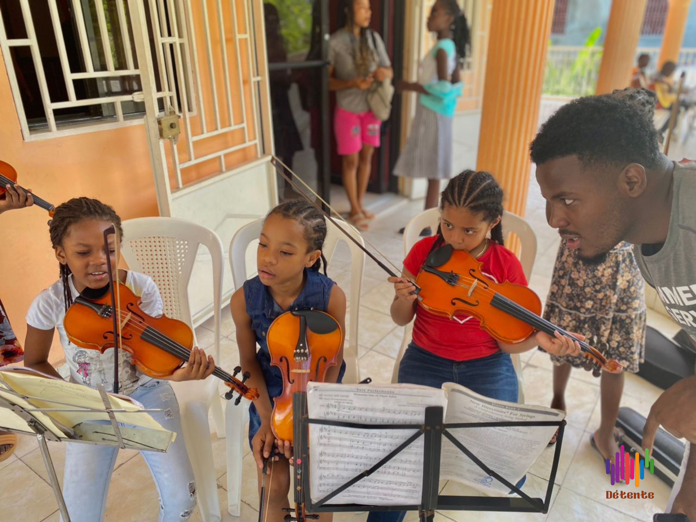
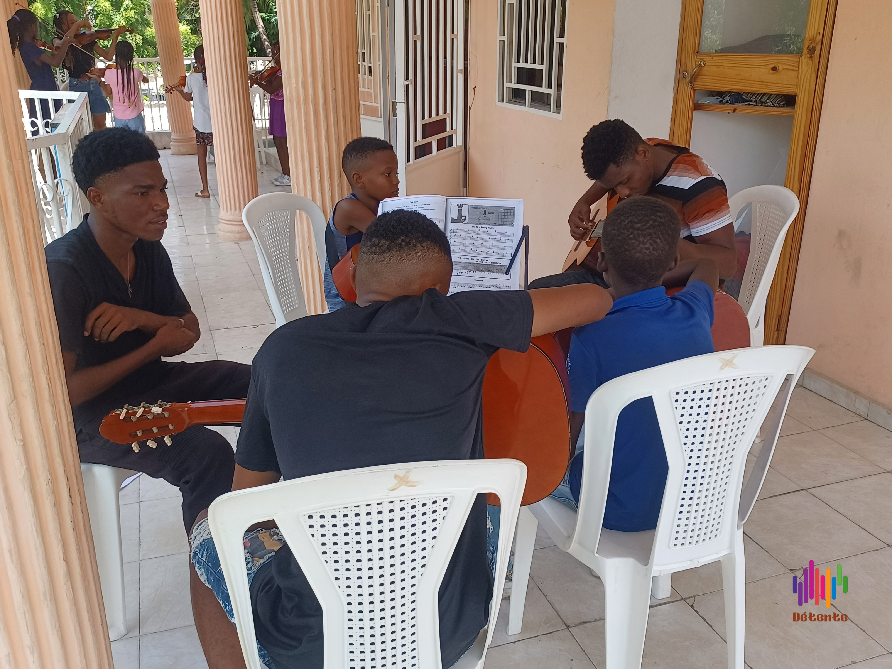

Notre mission est de cultiver l'amour de la musique chez les enfants, de développer leur talent musical, et de renforcer leur confiance en eux grâce à des programmes éducatifs adaptés à chaque âge et à chaque niveau de compétence.
Cours de Musique Diversifiés
Instruments : piano, guitare, violon, flûte, batterie, et plus encore.
Chant et voix : techniques vocales et expression artistique.
Théorie musicale :
bases de la musique
lecture de partitions
composition
Approche Pédagogique Ludique :
Méthodes interactives et amusantes adaptées aux enfants.
Activités musicales et jeux pour stimuler l'apprentissage.
Ateliers de groupe pour développer l'écoute et le travail en équipe.
Enseignants Passionnés :
Professeurs qualifiés et expérimentés.
Encadrement personnalisé pour chaque élève.
Atmosphère bienveillante et inspirante.
Événements et Performances :
Récital pour cloturer chaque session
Concerts de fin d'année dans le but de récolter des fond pour octroyer des bourses
Ateliers et masterclasses avec des musiciens professionnels.
Participation à des concours et festivals de musique.